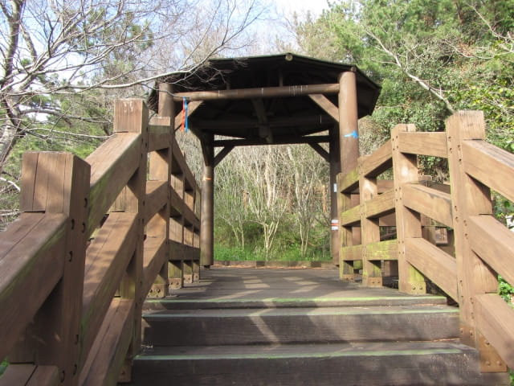
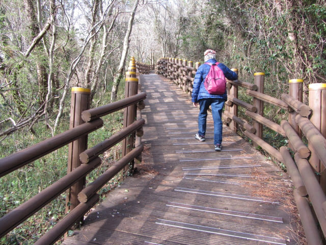
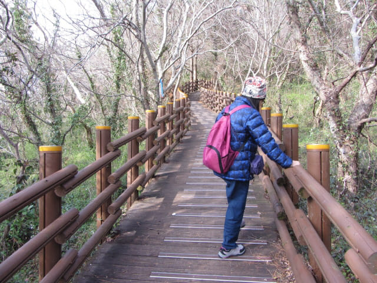

離開濟州太平洋樂園, 沿偶來8號小路走, 穿過一段荒蕪道路, 穿過星川峰下的優美溪谷及公園, 走過橫躺星川兩岸的木橋, 再向前走一會, 左邊有一道樓梯, 彎彎曲曲延伸往山上, 這裡便是星川峰的入口。
望望手錶, 差不多下午四時三十分, 其實這時心裡正掙扎如何安排接著的行程, 有兩個選擇:
在星川峰入口猶豫了一會, 這時天色漸漸好轉, 並開始微微放晴, 便決定先登上星川峰, 然後才決定是否繼續步行往大浦海岸柱狀節理帶。

沿彎彎曲曲的樓梯一直往上走。
走完一段又一段, 好像通往天上的階梯。
回望往下望, 已經走到很高了。
沿彎彎曲曲的樓梯一直往上走, 來到山腰中的一個涼亭, 在這裡稍作休息。

涼亭旁有兩條路繼續往前走, 左邊是平緩的路, 右邊是向上陡斜的路。按路口的地圖所示, 兩條路都可以到達星川峰(베릿내오름), 右邊的路比較短, 估計是比較陡峭的原因吧。
猶豫了一會, 最後選擇了右邊距離較短的路登上星川峰。
步道一直往山上延伸, 好像沒有盡頭的。


不斷往上爬。
星川峰展望台
穿過樹林, 豁然開朗, 終於來到星川峰最高點的展望台, 比估計的高和辛苦很多。
欲窮千里目, 更上一層樓, 回報是無限風光。
腳下是圓形的濟州國際會議中心和隔鄰黃色的濟州布英度假村。濟州國際會議中心後面的海岸便是大浦海岸柱狀節理帶了。